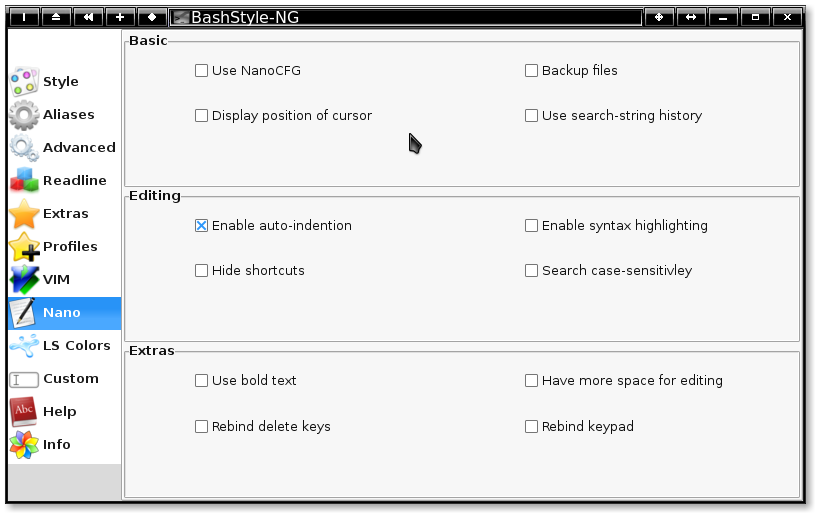

Chapter 10: Nano

Use NanoCFG
When enabled, BS-NG takes care of Nanos configuration.
Backup files
Wen enabled, backup files to <filename>~.
Display position of cursor
When enabled, display the cursor-position.
Enable auto-indention
When enabled, do auto-identation according to the file-type.
Enable syntax highlighting
When enabled, use colors, if a matching color-rule is available.
Hide shortcuts
When enabled, hide the shortcuts-list.
Search case-sensitively
When enabled, searches are case-sensitive.
Use bold text
When enabled, have bold colors, if colors are enabled.
Have more space for editing
When enabled, use the topmost line also for editing.